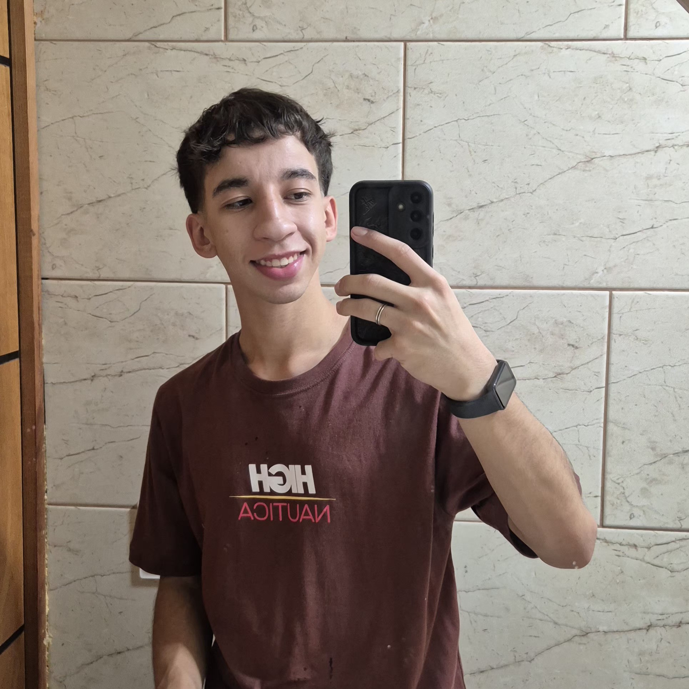
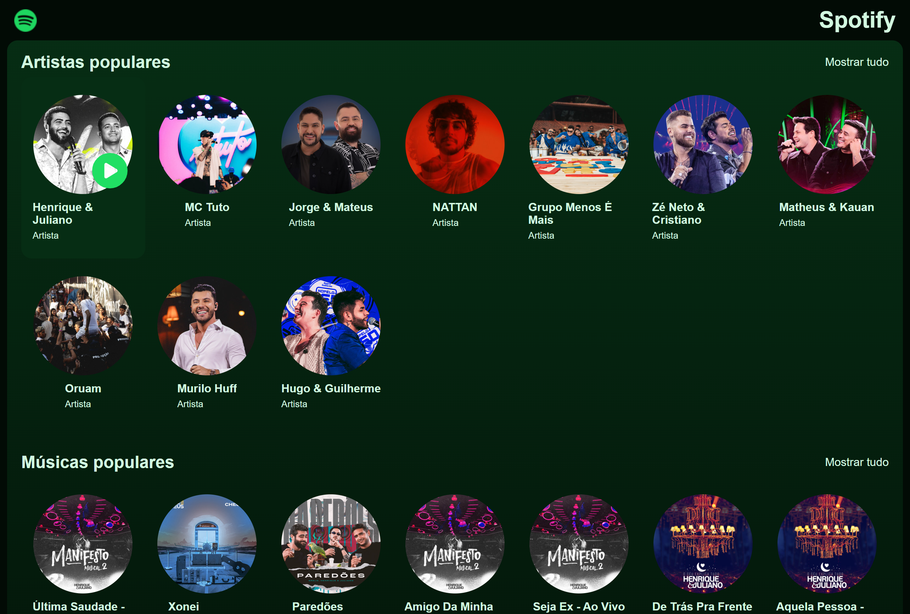
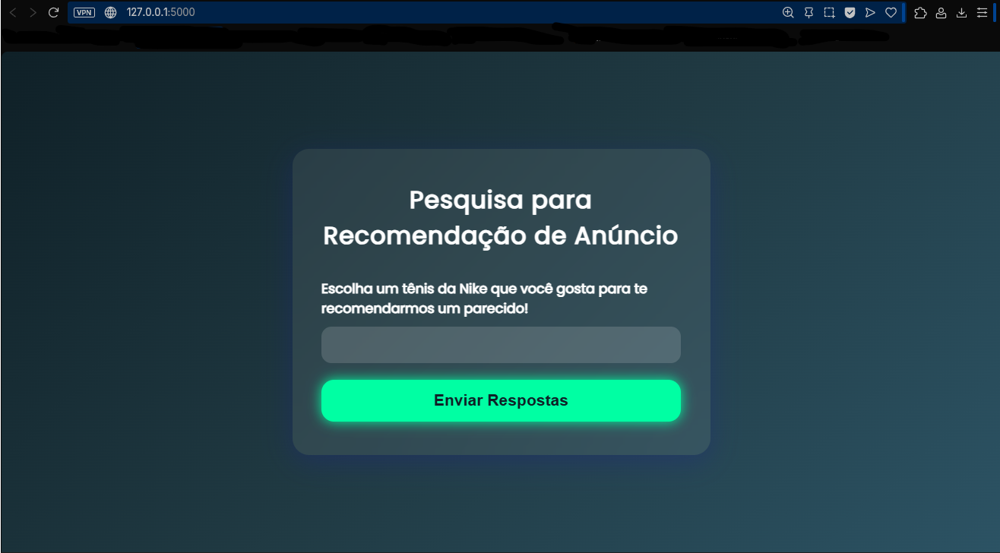

Desenvolvedor Full-Stack
Desenvolvedor em início de carreira apaixonado por tecnologia e desenvolvimento web.
Sobre
Sou formado em Análise e Desenvolvimento de Sistemas pela Universidade Braz Cubas, possuo formação técnica em Administração pela Centro Paula Souza (ETEC) e atualmente curso Desenvolvimento de Sistemas no SENAI Anchieta. Tenho grande interesse em tecnologia e desenvolvimento de software, buscando constantemente aprender novas ferramentas e evoluir profissionalmente na área.
Durante minha formação acadêmica participei de projetos práticos, incluindo o desenvolvimento de um sistema em parceria com a Secretaria do Meio Ambiente de Mogi das Cruzes. Nesse projeto atuei na organização das tarefas, criação de protótipos, desenvolvimento do sistema e elaboração da documentação, trabalhando em equipe para atender às necessidades apresentadas pelos clientes.
Também apresentei trabalhos no Encontro Científico Internacional da Braz Cubas (ENCIBRAC), abordando temas como redes 6G e segurança de carros autônomos. Possuo conhecimentos em desenvolvimento web e programação, utilizando tecnologias como HTML, CSS, JavaScript, Java e bancos de dados, e atualmente busco minha primeira oportunidade profissional na área de tecnologia para continuar aprendendo e contribuindo com soluções eficientes.
Projetos

Réplica do Spotify
Projeto Full-Stack de réplica da plataforma do Spotify, funcional e responsivo para todos os tipos de dispositivo.
Contém criação de API, conexão com banco de dados, criação de componentes e paginas, estilização, lógicas de play/pause, lógicas de front e back-end
Linguagens: React, Node.js, Express.js, HTML e CSS, MongoDB e Vite

Anúncio Perfeito
Projeto academico realizado para facilitar a busca por produtos similares ao seu interesse. Consiste em pesquisar um produto que goste e receber uma lista de produtos que talves goste, com base no produto em que enviou.
Contém criação de IA, Machine Learning, uso de APIs e uso de validações.
Linguagens: HTML, CSS, JavaScript Python e Flask
Agenda de Contatos
Projeto academico de criação de agenda digital. Utilizando CRUD e boas práticas de programação.
Contém criação de interface, lógica de programação, consulta e uso dos dados, integração front-end e back-end.
Linguagens: HTML, CSS, JavaScript, Java, SpringBoot.